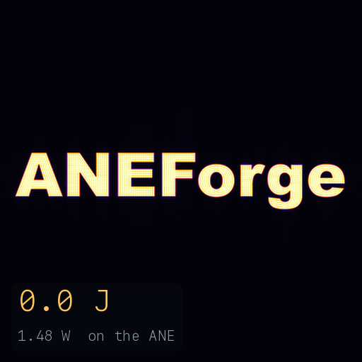
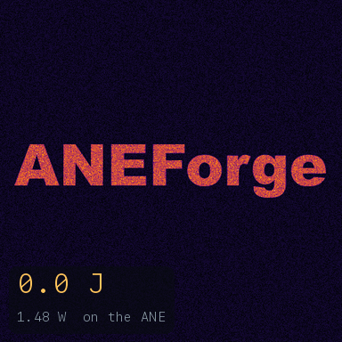
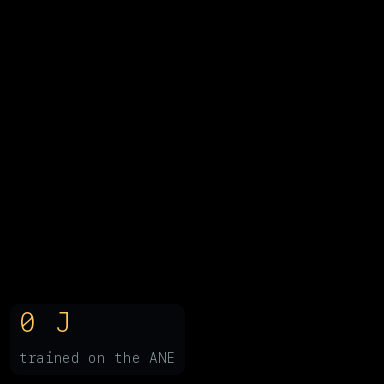

Train and compute on the chip Apple built for inference only.
ANEForge compiles a tensor graph into one program for the Apple Neural Engine and runs it from Python, without CoreML. The same path trains on the engine, optimizer included. The compute unit is fixed, so a model never falls to CPU/GPU.
import aneforge as af x = af.input((1, 3, 32, 32)) # lazy graph input y = af.conv(x, W, pad=1).relu().mean((2, 3)) net = af.compile(y, compress="int8") out = net(image) # runs on the ANE enc = af.load(".../all-MiniLM-L6-v2") vec = enc(tokens) # cosine 1.0000
The package, the paper behind it, and a guide to the engine.
ANEForge
The Python package. Build a graph, compile it to one ANE program, then run or train it. It handles quantized weights, native attention, resident state, and cross-compilation for 28 targets.
GitHub → Docs →The paper
“Python for direct computation on the Apple Neural Engine.” The preprint behind the numbers on this page, with the dispatch path and the validation against reference in full.
arXiv →The guide
A reverse-engineering account of the engine: the datapath, the compiler, the program format, the firmware, the kernel driver, and the cross-silicon target tables. Most of it is undocumented by Apple.
Read →Training, LLMs, native layers, compression, and more.
Apple exposes the Neural Engine only through CoreML, and only for inference. ANEForge dispatches through the same private aned stack that CoreML uses internally, from a normal user process.
Training runs on the engine CIFAR-10 → 71%
The forward pass, backward pass, and Adam update all compile to ANE programs, so a model trains end to end on the engine.
LLMs on the engine 27B on a pure ANE
Prefill and KV-cache decode for Llama/Qwen, exact speculative decoding, Mixture-of-Experts from GGUF, and the hybrid Qwen3.5-27B (DeltaNet + attention), decoding end to end on the engine.
MLPerf on the engine passes the checker
The MLPerf reference ResNet-50 runs pure-ANE and passes the upstream MLCommons submission_checker at the reference accuracy (fp16 76.44%, equal to fp32). One command reproduces it.
Layers CoreML can’t reach +19 bridge ops
af.sdpa drives fused attention directly, what CoreML never emits. Sort, argmax, topk, geometry too.
Streaming weight compression 4× smaller
int8, int4-LUT, or sparse weights via the dequant path, accuracy-gated. KV-cache and optimizer state stay resident.
Run arbitrary workloads FFT, BLAS
Not just neural nets. FFTs, linear algebra, and fluid sims compile straight to the engine.
Cross-compile across silicon 28 targets
Lower and gate a graph for any M1 to M5 ANE from one machine, and estimate its latency without running it.
CoreML is the only public route to the engine, and all it decides is whether to use it.
| Path | On the ANE | No CoreML | Trains on it |
|---|---|---|---|
| CoreML / coremltools | scheduler chooses | no | no |
| MLX, PyTorch (MPS) | no (GPU) | yes | on the GPU |
| ANEForge | yes (direct) | yes | yes |
ANEForge compiles to the engine from an ordinary user process, with no entitlement and no SIP changes.
Where it lands:
the reference ResNet-50 against official MLPerf.
The MLPerf reference ResNet-50 on the engine, next to official MLPerf Inference results. Every competitor number is sourced to a public mlcommons/inference_results submission; the ANE row is unofficial and self-measured.
| System | SingleStream p90 | Offline | Power class |
|---|---|---|---|
| Apple Neural Engineunofficial | 0.773 ms | 1,149/s | single-digit W · SoC block |
| NVIDIA Jetson AGX Orinv3.1 · edge | 0.640 ms | 6,424/s | 15–60 W module |
| NVIDIA H100, 1 GPUv4.0 · datacenter | — | 88,714/s | 350–700 W board |
Passes the upstream MLCommons submission_checker (v5.1, all three edge scenarios VALID) at fp16 76.44% top-1, equal to fp32. On SingleStream latency the ANE is within ~1.2× of the Jetson AGX Orin at a fraction of the power; on Offline throughput it trails, because the program is batch-1 and compute-bound — at ~10 TFLOP/s it sits on the engine's applicable roofline. Power class is a device power envelope, not a MLPerf Power measurement. Sourced from mlcommons/inference_results_v3.1 (Orin) and v4.0 (H100).
Simulations and learning, run and trained on the engine.
Not just neural nets. Each of these compiles to ANE programs and runs end to end on the Neural Engine.

Fluid simulation
A dye painted as the word ANEForge, stirred by a 2-D incompressible Navier–Stokes flow. Every FFT in the pseudo-spectral loop runs on the engine, about 54 J at the 1.48 W rail.
reproduce →
Reaction-diffusion
Gray–Scott Turing patterns bloom from the word into a branching labyrinth. One program re-dispatches each step: a 3×3 Laplacian as a native ANE conv, the reactions as elementwise ops.
reproduce →
A network that grows
A small CNN update rule, trained on the engine, grows a lizard from one seed pixel. The forward and backward passes both run on the ANE, so the rule is learned there, not just replayed.
reproduce →Apple Silicon, macOS 14+, Python 3.10+.
The e5rt dispatch shim builds against Apple frameworks on first use. Then browse examples/, starting with the quickstart.